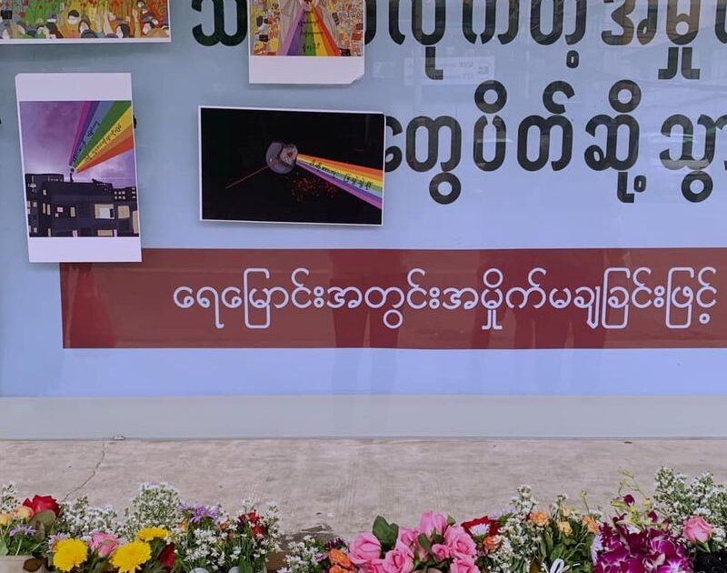

Armed clashes break out in Myanmar between troops and anti-junta protesters, US expands sanctions
April 8, 2021
(Reuters) -At least 11 demonstrators were killed in clashes with security forces in a town in northwest Myanmar after truckloads of troops arrived to quell a protest against the ruling military junta, domestic media reported on Thursday.
Protesters armed with homemade guns, knives and firebombs fought back against the troops in the town of Taze and more soldiers were brought in, the Myanmar Now and Irrawaddy news outlets said.
Fighting carried on into Thursday morning and at least 11 protesters were killed and about 20 wounded, they said.There was no word of any casualties among the soldiers.
It took the toll of civilians killed by security forces to more than 600 since the junta seized power from the elected government of Aung San Suu Kyi on Feb.1, according to the Assistance Association for Political Prisoners (AAPP) activist group.
Taze is near the town of Kale, where at least 12 people were killed in a similar clash between troops and protesters on Wednesday, according to news media and witnesses.
The incidents could signal a new phase in a struggle in which the opposition has largely used peaceful means of protest despite the lethal actions of the security forces.
'People will try to defend their own lives and their rights,' said a former government minister who belongs to the Committee Representing Pyidaungsu Hluttaw (CRPH), a group of lawmakers representing the ousted civilian government.
'People will not wait for CRPH to act,' the minister told Reuters.'The CRPH cannot stop the possible armed resistance by the people, from the people.'The junta could not be reached for comment.
SECURITY COUNCIL
A member of the CRPH, which is attempting to restore the civilian government, will on Friday address an informal, virtual gathering of the 15 U.N. Security Council members in New York, diplomats said.
It will be the first public discussion of Myanmar by the Council’s members since the coup on Feb.1.
The Security Council has condemned the violence against protesters, but has not defined the military takeover as a coup or threatened any action, due to opposition by China, Russia, India and Vietnam.
The United States, which has imposed sanctions on the junta’s economic interests, on Thursday added a state-owned gem enterprise to its list of targets.
The junta has not baulked at taking on celebrities, and on Thursday arrested Paing Takhon, a popular 24-year-old model and actor who had spoken out against the coup and pledged support for Aung San Suu Kyi, his sister Thi Thi Lwin said.
She said eight trucks and about 50 soldiers had come to pick him up at their parents’ home in Yangon, where he had been staying as he was unwell from malaria and a heart condition.She did not know where he had been taken.
AAPP has said over 2,800 people are in detention for opposing the junta.
Suu Kyi, a Nobel Peace Prize laureate and Myanmar’s leading champion of democracy over three decades, has been held at an undisclosed location since the coup and charged with crimes that could see her jailed and banned from politics.
Her National League for Democracy won an election in November but the military – which has ruled Burma for most of its post-independence history – alleged that it had been marred by fraud.
The junta’s vice-chairman, Soe Win, was shown on state-run television meeting with military officers in Shan state to detail what he said were more cases of fraud.Many Western governments have dismissed the assertions as nonsense.
BLACKLISTED GEMS
The United States, the European Union and others have already imposed sanctions on generals involved in the coup and some of their family members, as well as two conglomerates controlled by the military.
The latest U.S. sanctions blacklisted Myanma Gems Enterprise, part of the mining ministry.
The move blocks Americans from doing business with the entity, which issues permits and licences to mine precious stones and collects revenues from the sale of gems and jade.The U.S. Treasury Department said it would curb the junta’s ability to generate revenues.
Myanmar is the world’s main source of jade, and a major source of rubies and other rare gems.
Secretary of State Antony Blinken said the United States would 'keep increasing pressure on the regime’s revenue streams until it ceases its violence, releases all those unjustly detained, lifts martial law and the nationwide state of emergency, removes telecommunications restrictions, and restores Burma to the path of democracy'.
An adviser to the CRPH told Reuters that at least six lawmakers from the National League for Democracy were now sheltering in India.
An Indian police official said they were among about 1,800 people who had entered from Myanmar since late February.
'MPs are in great danger at the moment in Myanmar.They are being searched, they are being followed by the soldiers,' the adviser said.
(Reporting by Reuters Staff; Writing by Angus MacSwan; Editing by Kevin Liffey)
Posted On: 2021-04-08T21:14:56

Content Date: 2021-04-08
Download Date: 2021-04-17
Document ID: L0C04AAEO